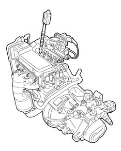
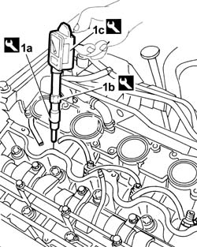
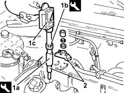

0510A10 cylinder compression - check for loose spark plugs or injectors
- Path
- Procedures > 05 DIAGNOSIS > 0510 VARIOUS CONTROLS > 0510A checks on engine > 0510A10 cylinder compression - check for loose spark plugs or injectors
- Kind
- repair procedure (removal / refitting; the operation number is the code)
- Applies to
- all engines; all production periods
- Interactive page
- https://sloeber94.github.io/elrnDB-fDbl/en/#/2584137
Applies to: engines: 1.2 8v; all production periods
Disconnect the electrical connections for the engine management control unit (
Op. 1056B82 INJECTION/IGNITION SYSTEM E.C.U. (ONE) - R + R
).
Name | Connector | |
|---|---|---|
- | Engine management ECU |
Detach one spark plug (
).
1. Insert the test instrument into the seat of the spark plug.

Applies to: engines: 1.2 8v; all production periods
Via the starter motor, make the engine execute a few revolutions while holding down the accelerator and clutch pedals.
Repeat the test on the remaining cylinders, making sure to reset the instrument each time.
Check that the cylinders' pressure measurements do not differ excessively.
Connect the electrical connection for the engine management control unit (
Op. 1056B82 INJECTION/IGNITION SYSTEM E.C.U. (ONE) - R + R
).
 | Name | Connector |
|---|---|---|
- | Engine management ECU |
Applies to: engines: 1.9 DIESEL; all production periods
Disconnect the electrical connection for the engine management control unit (
Op. 1060D80 DIESEL INJECTION SYSTEM ECU - R+R
).
| Name | Connector |
|---|---|---|
- | Engine management ECU |
Detach one injector ( ).
1. Fit the tools (1a) and (1b) on the test equipment (1c).
 | Name | Country |
|---|---|---|
1a | Dummy injector | 1.895.682.127 |
| Name | Country |
|---|---|---|
1b | Connection | 1.870.811.001 |
Insert the test instrument into the injector seat.

Applies to: engines: 1.9 DIESEL; all production periods
Via the starter motor, make the engine execute a few revolutions while holding down the accelerator and clutch pedals.
Repeat the test on the remaining cylinders, making sure to reset the instrument each time.
Check that the cylinders' pressure measurements do not differ excessively.
Connect the electrical connection for the engine management control unit
Op. 1060D80 DIESEL INJECTION SYSTEM ECU - R+R.
| Name | Connector |
|---|---|---|
- | Engine management ECU |
Applies to: engines: 1.9 JTD 8V; all production periods
Disconnect the electrical connections from the engine management control unit
Op. 1060G80 DIESEL ELECTRONIC INJECTION SYSTEM CONTROL UNIT - R.R..
1. Fit the tools (1a) and (1b) on the test equipment (1c).
| Name | Country |
|---|---|---|
1a | Dummy injector | 1.870.793.000 |
| Name | Country |
|---|---|---|
1b | Connection | 1.870.811.001 |
2. Insert the test instrument into the fuel injector seat and lock it with the bracket.
Viat the starter motor, make the engine execute a few revolutions while holding down the accelerator and clutch pedals.
Repeat the test on the remaining cylinders, making sure each time to reset the instrument's pen point.
Check that the cylinders' pressure measurements do not differ excessively.

Applies to: engines: 1.9 JTD 8V; all production periods
Connect the electrical connections to the engine management control unit.
Op. 1060G80 DIESEL ELECTRONIC INJECTION SYSTEM CONTROL UNIT - R.R.
Applies to: engines: 1.4 8v; all production periods
Disconnect the electrical connections for the engine management control unit
Topics linked from this page (5)
- 1056B82 injection/ignition system e.c.u. (one) - r + r
- 1060D80 diesel injection system ecu - r+r
- 1060G80 ds electric injection control unit - r r
- 5510D10 spark plugs - r+r
- M010 ENGINE MANAGEMENT ECU